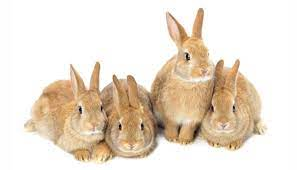
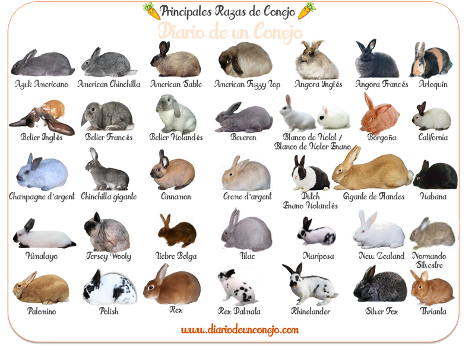

Alimantacion

Razas de conejo
Su alimantacion consiste en:
- 80% HENO
- 15% HOJAS VEGETALES
- 5% PELLETS
- HIERBA FRESCA, HOJAS O VERDURAS
- OTRAS VERDURAS O FRUTAS
- PIENSO
Pero se deben evitar estos alimentos:
- No se recomienda usar patata, lechuga iceberg, espinacas, uvas ó sandia.
- No usar piensos de semillas y cereales
- Evitar frutas muy acuosas, galletas y cereales en general, golosinas con miel o pan
Existen diferentes razas de conejos al rededor del mundo como los siguientes:
- Conejo Holandes
- Conejo Holandes enano
- Conejo cabeza de leon
- Mini lop
- Mini rex
- Conejo gigante continental
- etc

¡Gracias por visitarnos!